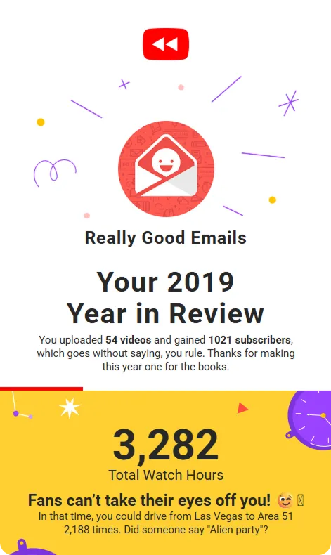
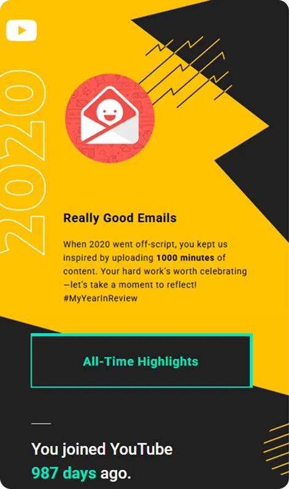
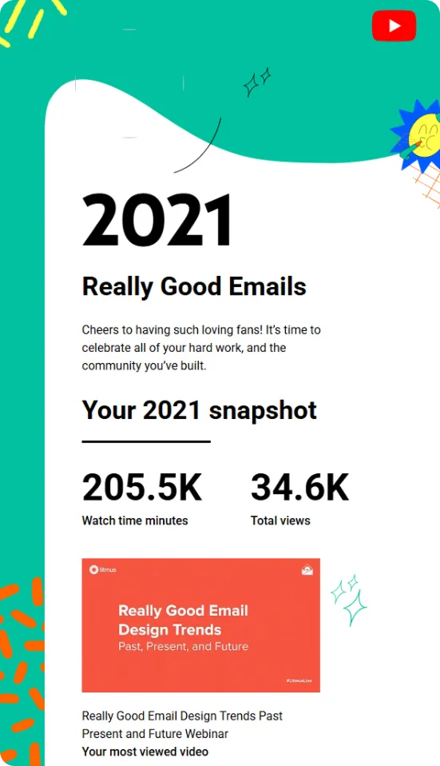

Promoting year-in-review emails takes more than eye-catching graphics—it demands accurate data, smart design choices, and a focus on shareability.
In this episode of Feedback Friday, Matt Helbig and Najmah Salam dive into YouTube’s annual recap emails from 2019 to 2021. They explore how data planning, mobile-first typography, and personalized touches make the messages feel engaging, and where design or UX decisions fall short. From bold highlights to social-share prompts, the breakdown reveals what marketers can learn about turning stats into stories people actually want to screenshot and spread.
If you work in product, lifecycle, or brand marketing, this teardown offers practical takeaways for building roundups that feel polished, personal, and worth sharing.
Matt Helbig: What's up, email geeks? Welcome back to another episode of Feedback Friday, a show where we talk about emails and what makes them really good. I am joined this week with an amazing guest. How about you introduce yourself?
Najmah Salam: Hi, I'm Najmah . I like to think I'm amazing too, thank you. Yes, I am an email geek. I am an email design aficionado, so I'm really excited. I think I'm in a 'long-time listener, first-time caller' situation here, so I'm really excited to be here.
Matt Helbig: Nice. We received some impressive-looking YouTube emails this week, and we've decided to create a year-end recap series here.
(See the full email)
Najmah Salam: The reason why I wanted to look at YouTube is that I have a long history with YouTube. I'm sure everybody does, but I used to post ukulele videos on YouTube, and it's actually how I met many of my friends, including my partner. So, wow, I have a personal connection with YouTube. What caught my eye about these emails in particular is the data, and it's actually the stuff that you don't see. The deal with Roundup emails is that your data must be accurate, and that's a lot of work to accomplish. That's a year in the making, quite literally, because you have to plan ahead and then accumulate that data as the year goes on.
Then you can have the data at the end of the year to show people and accurately wrap up the year. In terms of design, I love that they personalize it by placing the logo at the top of your avatar. That’s just a really nice and easy touch, and it’s easy enough to feed in as well. When you scroll in, you have things like this, very blocky play. I think design and great copy combined is just magic in email. Things like, “3,282 total watch hours. Fans can’t take their eyes off you.” That’s really nice. However, what really caught my eye was that they did the math on “you can drive from Las Vegas to Area 51 2,188 times.”
There’s a lot of decision-making and planning that has to be done there. I’d love to see what the fallback was if you didn’t have that many hours. Maybe if your hours were in the hundreds or the tens, did they use a different bit of data there? And the fact that they picked Las Vegas as the destination for Area 51... did someone say an alien party? I’d love to know what the decision-making was there as well. That’s really fun.
Matt Helbig: I really like this. Even this is like their little rewind sort of thing to make it seem like this is your year in review. I like how they mix illustrations with personalization. They’re not just pulling in your image. I think that’s really smart to make it feel more integrated. And then, as you go through the email, they really highlight when they are using personal data by bolding what’s individual to you. That’s really smart to bring your eye to that section. Even here, again, mixing in illustrations, maybe even a background image, makes it feel more personal and not just thrown in there. I think they’re doing a great job with that.
Najmah Salam: I think with Roundup emails, there’s definitely space for a bit of wackiness. Maybe there’s more area to play with the branding. If you have a fairly basic or strict branding that you stick to throughout the year, the Roundup is a great place to make it more fun, a little wacky, and go off-piste as well. We can see that here. I like the squiggles and the illustrative elements. I feel like we saw a lot of that at the time, and I still see it now. It’s a good way of making things look friendly, accessible, and approachable. The other thing I wanted to bring to your attention was the email poll at the bottom. I’m not sure about the utility of having up to five elements to choose from in a poll. Personally, I’ve always preferred just “thumbs up” or “thumbs down” because it gives me a quick read on how people feel.
Matt Helbig: It is interesting to think about what each option means. Has an email ever really made me feel this happy? If you pick that option, what happens? Does it get forwarded to the person who sent this email? Or if you hit sad, does that mean the email might change in the future? I like people who include these in their emails. I don’t really click on them often, but I can see how this data might get lost when you’re just doing campaigns every day. Still, having some way to get feedback from your audience is a good step.
Najmah Salam: I’m a big fan of having feedback in emails. Perhaps YouTube can afford to do this because it has the critical mass of people receiving these emails. The companies I’ve worked with had lists in the tens of thousands or hundreds of thousands. For me, the best I could do was a simple sad or happy option, and if some people clicked, that was already useful. YouTube, with its massive subscriber base, can probably gather a lot more meaningful data. And honestly, I don’t think an email has ever made me that happy or that sad.
Matt Helbig: It was also interesting to see the legal copy calling out that the statistics were calculated between a specific time period. That might help address data concerns, such as people inquiring about why YouTube has all this data or what timeline it covers. Including that detail helps reduce fear and shows the data is used to improve the experience rather than just spying.
Najmah Salam: That’s a really good touch. It makes me think that some manual work was involved here. This isn’t just data automatically accumulated; there was a concerted effort to pull data from a specific time range and then craft an email around it. That shows intentionality.
Matt Helbig: Like you were saying, if the numbers are closer to zero, there’s also an opportunity. As much as it’s cool to see big numbers and share them with your followers, there’s just as much opportunity to provide resources to people with lower numbers or even zero, helping them get back into the product and produce more videos. It’s a good way to check in with your user base and see if they’re experiencing any issues. Alright, fast forward to 2020. They’ve retained some of the same elements but introduced additional data.
(See the full email)
Najmah Salam: I think there’s some maturity here in the design. Where we had a very blocky layout, this became much more scrollable. They made a real effort to avoid blockiness, using unusual shapes to break up sections so it doesn’t look like tables. I really like that. They’ve kept the scribbly illustrative look, which is cool, but they’ve used it more smartly, guiding your eyes through the email. From a design perspective, it’s leaps and bounds ahead of the 2019 model. The text has more space to breathe, which makes each bit of data more meaningful because it isn’t scrunched up.
Matt Helbig: They added more information, but perhaps lost some of the quirky touches, such as the Vegas reference. It’s more polished now. I still appreciate how the personalization is seamlessly integrated into the design, rather than being overly prominent. They’re also using color to highlight personalized data, making it stand out from the rest of the copy. That’s smart.
Najmah Salam: Having a stricter color palette can be really useful in email design because it helps guide the eye. One tip I always give is: if you zoom out on an email and the call to action or the key elements still stick out, then you know the design is working. I think that’s the case here, with the bright green against black highlighting those data points.
Matt Helbig: I actually thought these were buttons because they look like them, but I think they’re just headlines. They’re not clickable.
Najmah Salam: That’s one pet peeve of mine: non-buttons that look like buttons.
For sure. Another nice touch is the inclusion of a note of gratitude at the bottom. “You’ve taken the challenge of 2020 head-on and kept our spirits high. Thanks for being a constant inspiration.” I like that. Gratitude in Roundup emails is powerful. It acknowledges the subscriber’s role in the relationship.
Matt Helbig: This is interesting because you’re making an email for such a huge audience. It’s not segmented. Maybe if you were in the top 5 percent of creators, you’d get something special. But mostly this is going to a massive audience, all receiving the same “year in review.” It’s an attempt to drive some traffic around a hashtag. Ultimately, YouTube is built on user-generated content. Without people uploading videos, they’d struggle. So yes, more ukulele videos for sure. Alright, so in 2021, here’s the fresh new hotness. So what do you think about this one?
(See the full email)
Najmah Salam: I mean, again, the design is completely different. They’ve kept the scrollable effect. In 2019, it looked like a table. Now it’s much more experiential, where you scroll down. I think this is interesting, considering how big the text is when compared to 2019 as well. It is definitely a mobile-first experience. I don’t know, but this is my hypothesis: I think they have specifically designed it so that you can screenshot it and share it on social media from your phone.
That is what it looks like to me. It looks like they have had that in mind. There are some really cool things here, but I think there are also some areas that could have been improved. It is not really clear to me that that was the most-watched video upfront. I know it's mentioned in the text, but it is not made clear. I think a caption stating, “Your most viewed video was…” would be helpful. Yes, it is a design hierarchy, right? You want to lead the eye a bit more in terms of pointing the finger, leading with a title that says “your most viewed video was…” and then showing the thing. Whereas it is now often an afterthought, it was once the caption.
Matt Helbig: Again, with this one, I like the lockup here and then going down. I think you are right. I probably check my analytics all the time, so I know this is the most viewed video. But like you are saying, maybe having a better way to tell you, or even make it more like a surprise, like “guess what your most viewed video is” and then it shows you the answer — could be kind of a fun thing to try.
Najmah Salam: Yes, I am sure YouTube has a budget to create a personalized, almost GIF-like video. I am sure they have that budget in there. Perhaps there is something that reveals and says, “Haha, this is your most viewed video,” or something similar. I really like this idea of creating something to be shareable.
Matt Helbig: I also like the idea of them seeing what data points they have been able to pull in. Okay, they know the watch time and views, but now they also know they could pull in someone’s YouTube thumbnail and make it feel even more personal in their YouTube channel title. I think that is cool. With this next section, I thought they did some interesting stuff, pulling in more country data and using emojis. I thought that was a fun thing to try.
Najmah Salam: There is something funny to me about “you are connecting with fans.” You might be like “there is something with fans” with copy — “hey there, international superstar.” There is something really fun that you can be.
Matt Helbig: Yes, that is cool. I like that. Yeah, you should. That is some good copywriting on the fly. That is good.
Najmah Salam: And this one, I thought it was funny. I noticed they don’t show you your top comment, which makes me wonder. Some comments on YouTube can be quite negative, so I am curious if maybe they just decide, “Okay, this is how many comments you are going to get,” versus the top-upvoted comment or whatever. I love the idea of the team being like, “Maybe we can put in the most upvoted comment,” and then they tried it, and they were like, “Hmm, maybe not, no, maybe no.
Matt Helbig: Exactly. Scrolling down, they finally asked for that social share. I kind of thought, like you are saying, screenshotting is a great way to get people, but now that they are asking for this, maybe we should see what those graphics could look like and if people would actually click on them.
Najmah Salam: This is the main thing. Email does not exist in a silo. I think a good email should lead somewhere else. Specifically with something like this, you are not asking somebody to purchase something. You are not asking somebody to… what is the call to action here? I believe the call to action here is to encourage people to share their experiences on YouTube. I think making it clear was a really smart idea for this year. Also, they must have been looking at the Spotify ones — the famous ones, right? Their roundups are so focused on shareability. I have to imagine that was part of the process here. Maybe they were thinking, “Let’s make sure the content is more shareable,” as opposed to what we had over the last two years.
Matt Helbig: I kind of like them writing tweets for you in your sort of voice. That is kind of cool. I am not a person who usually clicks these buttons in emails, but, as you said, if there isn't really a CTA or anything, it is nice to have some sort of landing page or a social share to share with your audience. And then, right down here, I thought it was interesting that they are trying to get you to… maybe this is targeted at me. I didn't create many Shorts this year, so I am curious if this was included in every email or if this one is specifically because I haven't engaged much with that product.
Najmah Salam: Yes, that is a good point. I feel like it was really new and something they had only just released at this time. This is probably a good opportunity for them to promote that product as much as possible and encourage people to create a Short. Here is the thing. A design cheat I love is when you have two overlapping things that break up a rectangular block. Those hands over the rectangle — that is so easy to do because you can achieve that with a transparent PNG. I like the way the shapes are broken up in this.
Matt Helbig: Even just making a stock image go over that line a little bit really helps you transition to different parts of the email. That is a smart one. This last little section has those lifetime highlights. I think that is cool to see. It is interesting that they make this all about your channel, rather than the community or anything else. I haven't really seen a year wrap-up of what other creators are doing. I think that it is smart for them to focus on the individual channel. Perhaps it feels more personal to you. For email marketers who want to create a year-end email, do you have any tips on how to gather data to make it effective?
Najmah Salam: Yes, I think the planning really has to be about ensuring the data is tidy, because you want to be confident that the data you are pulling into these emails is as accurate as possible. What I suggest doing is… they kept it pretty simple in 2019. Maybe they had three major data points, and that was the whole email. So, if it is as simple as picking out three or four data points and then crafting a whole email about them, you can get clever with the copywriting like they did here. You can be clever about the design. The focus really needs to be on ensuring you have tidy data and then considering your fallbacks as well.
If someone does not have that data, consider what the email would look like in that case. If someone does not have that data available, should we not send an email at all? Do we switch up the copywriting? I think it should all be about quality over quantity. Do not be too concerned about having 15 different data points, because that can also get creepy, can’t it?
Matt Helbig: Well, that is all I have for these emails. I heard you have a pretty awesome Etsy store where you can get some email swag.
Najmah Salam: Yes, it is matchmetender.etsy.com, which I am sure will be in the show notes. It started with designing fun, little email-themed designs that I liked, because I am a designer. People started saying, “This should be a sticker,” so I started putting them up on Etsy, and emailers love them. I have mugs, stickers, t-shirts, and little sayings like “email’s not dead” and “this meeting could have been an email.” I fully endorse wearing them during particularly long and unproductive meetings.
Matt Helbig: Where can anyone else find you online? On Twitter? Is that a good place to find you?
Najmah Salam: Yes, you can find me on Twitter. I am pretty chatty on Twitter when I am in the mood. I am pretty much all over the internet. I am a child of the internet, and I like to think as well. If you'd like to discuss email, marketing, or design, please don't hesitate to reach out.
Matt Helbig: Thank you again for joining this week. It was a pleasure chatting with you.
Takeaways:
- Plan data collection all year to ensure accurate, trustworthy personalization.
- Use design hierarchy so “your most viewed video” and other stats are clear.
- Optimize for mobile-first layouts with large type, bold highlights, and contrast.
- Avoid non-clickable faux buttons to reduce user frustration.
- Add social share CTAs, emojis, and prewritten copy for screenshot-ready moments.
- Include gratitude and clear legal copy to build trust and reduce data concerns.